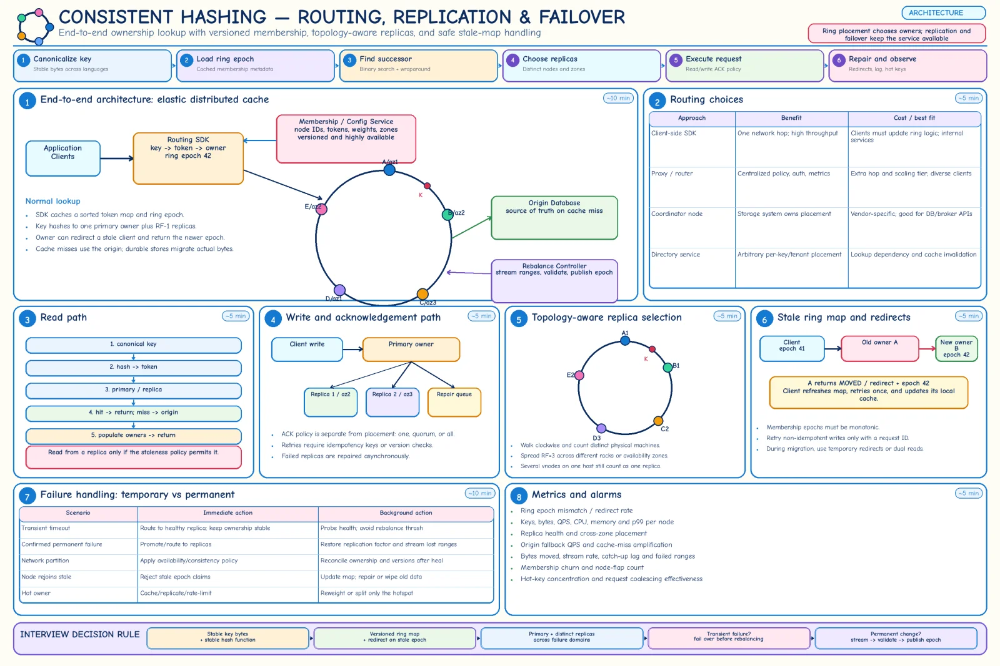

Topic · Consistent Hashing in Depth
Ring Routing, Replication, and Failover
Clients must agree on the ring version, replicas must land on distinct machines and zones, and stale maps must redirect safely.


Quick Revision
- Replicas: walk clockwise, pick distinct physical nodes across racks/AZs until RF is met.
- Placement ≠ consistency: acks, quorum, versions, and repair decide that.
- Membership metadata is versioned with a monotonic epoch.
- Stale client → old owner returns MOVED + new epoch → refresh → bounded retry with request ID.
- Shared routing key / hash tag to co-locate related keys.
Replication is separate from placement
RF = 3 primary: node A (AZ-1) replica1: node C (AZ-2) -- skip more tokens owned by A replica2: node F (AZ-3)
- Decide - sync vs async writes; ack one/quorum/all; read primary/nearest/quorum/hedged; conflict versioning; read repair or anti-entropy; promotion and replacement.
- Storage -
physical = logical × RF(1 TB × 3 = 3 TB) plus migration headroom.
Membership and routing control plane
cluster_id, ring_epoch, node_id, endpoint, state, tokens/slots, weight, rack/zone/region, replica policy
| Routing | Benefit | Cost |
|---|---|---|
| Client SDK | One hop, high throughput | Ring logic + updates in every client |
| Proxy / router | Central policy and metrics | Extra hop, another tier |
| Storage coordinator | Placement hidden | Vendor semantics |
| Directory | Arbitrary placement | Lookup dependency |
- Distribution - consensus config service, gossip + epochs, push/poll, or authoritative store + local caches. ZooKeeper-style services hold membership, not per-request lookups.
- Stale map - epoch 41 request at epoch 42 → MOVED (permanent) or ASK (mid-migration, Redis) → refresh → retry once; non-idempotent writes carry request ID or fencing token.
Read and write flows
READ (cache) canonicalize → hash → lower_bound + wrap → owner set → primary or allowed replica → hit: return → miss: single-flight origin fetch → populate owners → return failure: replica on timeout · redirect on stale epoch · origin QPS budget · hot key → replicas/L1 WRITE cache: write DB → invalidate/update owner set (idempotent) store: route to primary → write replicas → wait for acks → return → repair lagging copies
Multi-key locality (Redis hash tags):
cart:{user-123}:items · cart:{user-123}:summary · cart:{user-123}:version → same slot
Trade-offs
| Choice | Benefit | Cost / risk |
|---|---|---|
| Client-side routing | One hop | SDK rollout, stale maps everywhere |
| Proxy routing | Central policy | Latency, proxy scaling |
| Authoritative config service | Strong ordering | Control-plane dependency |
| Gossip membership | Decentralized, tolerant | Eventual convergence, epoch conflicts |
| Clockwise replica placement | Simple | Copies may share a failure domain |
| Topology-aware placement | Survives rack/AZ loss | More constrained |
Failure modes
- Fewer replicas than configured - consecutive vnodes on one host → count distinct nodes.
- All replicas fail together - same rack/AZ → topology-aware placement.
- Stale client writes to old owner - redirect, refresh, idempotent retry.
- Two owners accept writes - one monotonic epoch + fencing.
- Non-idempotent op runs twice - request IDs, dedupe, CAS.
- Membership service down - replicated consensus + cached immutable snapshots.
- Gossip views diverge - epoch rules, redirects, periodic reconciliation.
- Redirect loops - bounded retries, forced refresh, fail closed.
- Multi-key command spans owners - shared routing key/hash tag.
Interview practice
Answer aloud, then reveal.
Microsoft SDE-1 L60 (Jan 2025): sharding, consistent hashing, ZooKeeper - trade-offs.
Consensus service holds versioned membership, not per-request lookups. Clients cache the ring, binary-search, refresh on newer epochs, follow redirects. Placement is separate from replica consistency and migration.
Mastercard SDE-II (May 2024): sharding and consistent hashing.
Pick a key that matches queries; use a ring or stable slots for changing membership; explain vnodes, movement, replicas, hot-key limits, and the resharding control plane.
How do you choose replicas with vnodes?
Walk from the primary token picking distinct physical nodes, applying rack/AZ rules.
How do clients avoid different routing across languages?
Canonical serialization + published test vectors (bytes → hash → owner) run in every SDK.
How do you prevent two owners for one range?
Single authoritative monotonic epoch, lifecycle states, fencing; reject older-epoch claims.
How do you co-locate related keys?
Hash a shared aggregate root or hash tag; accept hot/oversized aggregates as the risk.